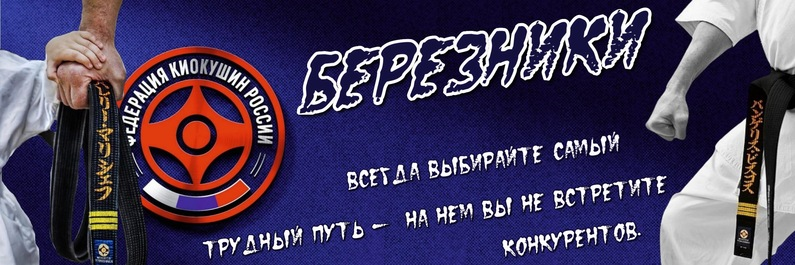

Пояс - это не только веревка, которой подвязывают куртку, это символы усердия и работоспособности ученика, награда за все его усилия. Нельзя рассматривать экзамен на следующую степень только как демонстрацию технической и физической кондиции. Необходимо доказать, что ваш уровень зрелости соответствует цвету пояса, что вы стали еще более рассудительным и уравновешенным. Белый пояс - уровень чистоты и потенциала. Вы впитываете все как губка, узнавая правила, понятия, движения. Оранжевый пояс (10 кю)- уровень стабильности. Символизирует первый проблеск зари на ночном небе. Оранжевый пояс с синей полоской (9 кю) - символизирует раннюю зарю. Синий пояс (8 кю) - уровень изменчивости, способности к приспособлению. Символизирует цвет неба перед восходом Солнца. Синийй пояс с желтой полоской (7 кю) - символизирует первый луч Солнца. Желтый пояс (6 кю) - Уровень утверждения.Символизирует восход Солнца. Желтый пояс с зеленой полоской (5 кю) – символизирует появление первых ростков под живительным светом Солнца. Зеленый пояс (4 кю) - уровень эмоций, чувствительности. Цвет символизирует распустившийся цветок. Зеленый пояс с коричневой полоской (3 кю) - символизирует цветок, набравший силу. Коричневый пояс (2 кю) - Практический/Творческий уровень.Цвет дерева, земли. Символизирует зрелость. Коричневый пояс с золотой полоской (1 кю) - символизирует зрелость, близкую к мудрости (дерево в огне). Черный пояс (дан) - уровень мастерства.Символ мудрости, обретаемой на пути воинского искусства с возрастанием мастерства (пепел).
Попов Алексей Александрович
Сафин Рустам Рафикович